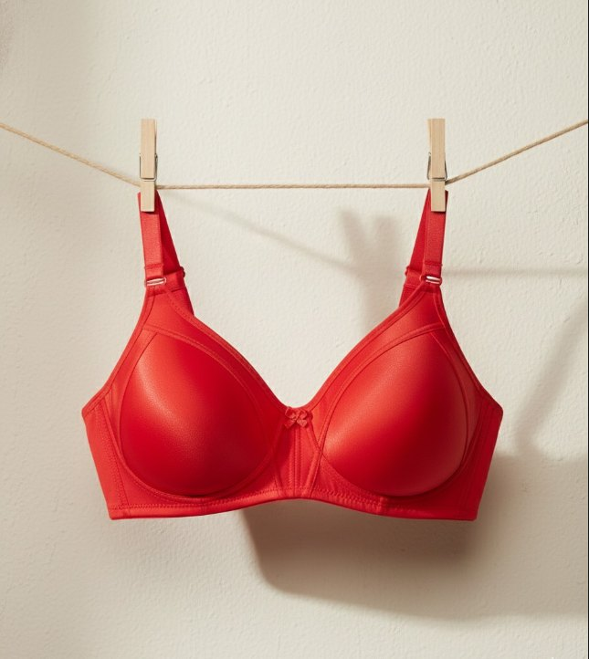

Form Sütyen
Akıcı çizgiler. Kendine özgü bir silüet.
EBRU · FORM KOLEKSİYONU
Güzellik, hissettiğin yerde başlar.
Her kıvrımı, her dokuyu,
her ince detayı
kendi bakış açından keşfet.
Bir fotoğraftan fazlası.
Dokun, döndür, yakından tanı.

3D görünüm şu anda açılamadı. Fotoğraf, ürünün orijinal rengini gösterir.
Sürükleyerek döndür · Yakından keşfet
01 Formu keşfet
02 Rengini bul
03 Detaya yaklaş
AZ PARÇA. ÇOK HİS.
Birbirini tamamlayan formlar.
Her açıdan sana yakın.
Akıcı çizgiler. Kendine özgü bir silüet.
Küçük detaylar. Bütün bir his.
EBRU’NUN DÜNYASI
Suya bırakılan rengin kendi yolunu bulması gibi. Ebru, adını her defasında yeniden doğan o eşsiz desenlerden alıyor.
Bizim için iç giyim de böyle bir ifade alanı: kişisel, özgür ve sana ait. Form ile dokunun buluştuğu yerde, kendi rengini bulman için.
Kendi açından bak ↗YAKINDAN BAKMAYA DEĞER
Kap formundan yan kanatlara uzanan silüeti, modeli dilediğin açıya çevirerek incele.
Dantel desenlerini ve kumaş yüzeyini yakınlaştır. Bir fotoğrafın ötesindeki detayları gör.
Bordodan pudraya, renklerin formu nasıl değiştirdiğini aynı model üzerinde deneyimle.
EN GÜZEL HİS, KENDİN OLMAK.
İçinden geldiği gibi.
Ebru’yu keşfet ↗